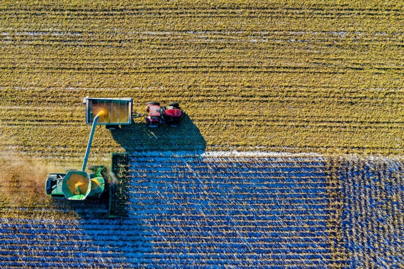

Agroekoteknologi adalah cabang ilmu yang menggabungkan prinsip-prinsip agronomi dan ekologi dengan teknologi modern untuk meningkatkan produksi pertanian secara berkelanjutan. Tujuan utamanya adalah untuk mengembangkan sistem pertanian yang efisien, produktif, dan ramah lingkungan.